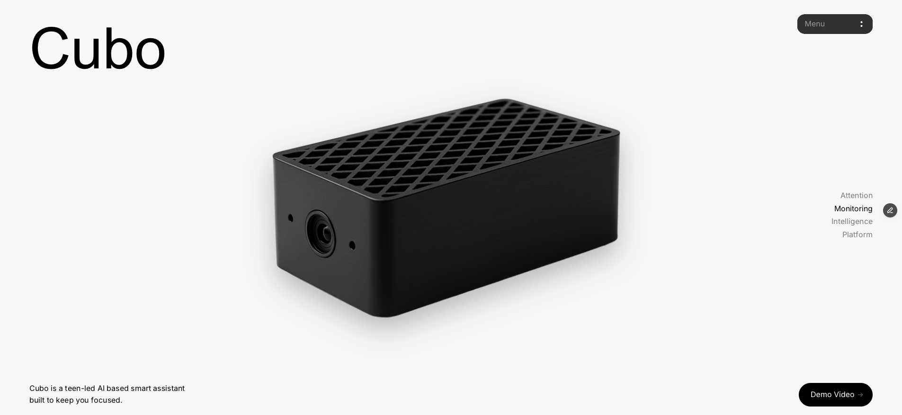
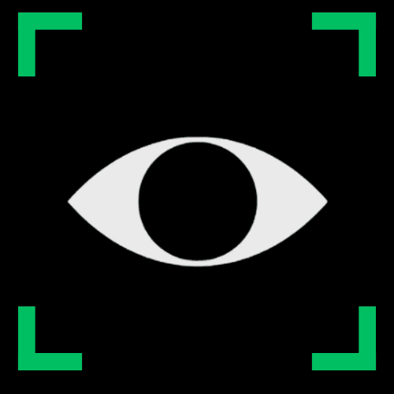
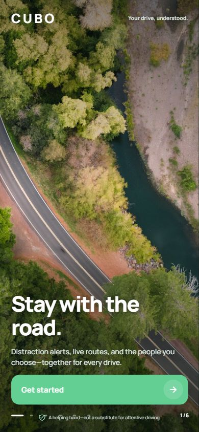
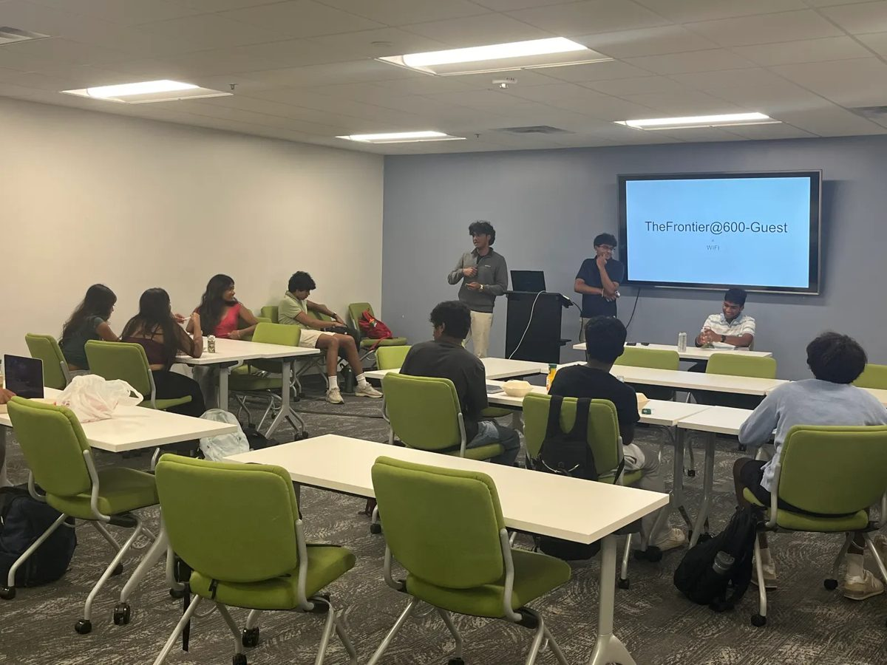
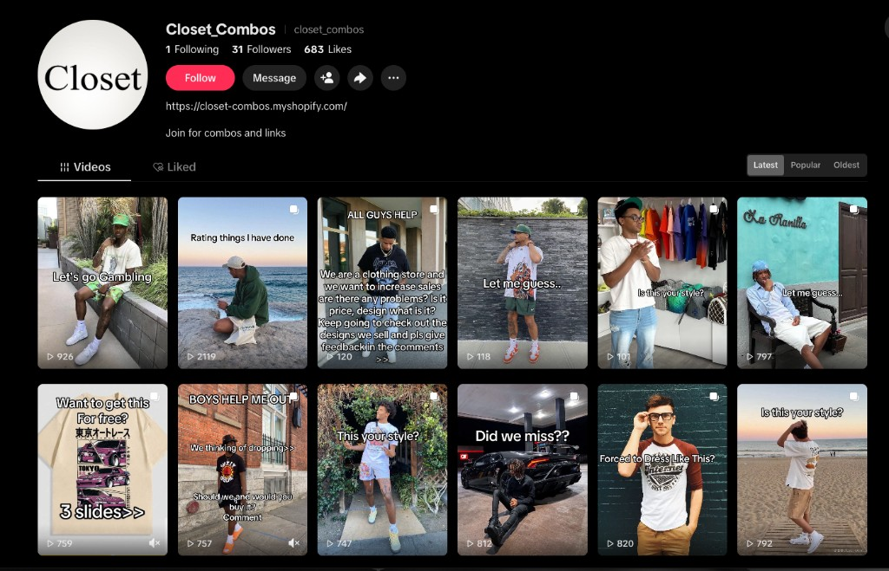
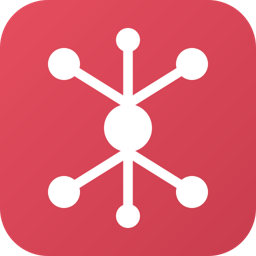
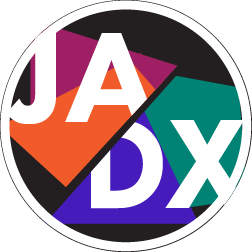

P R O J E C T S
Startups, research, and things I’ve built, newest first. Open [ MORE INFO ] on any project for the full story.

C U B O
Founder · Edge AI, hardware & app · 1st place, Ready, Set, App!
A distracted-driver detection and alert system built on quantum-optimized liquid neural networks (CfC). Trained on 14,000+ frames to catch every kind of distraction with up to 98% accuracy, across different lighting, drivers, and scenarios.
[ MORE INFO ] ▼
Problem: Distracted driving kills thousands of people every year, and teen drivers are hit hardest. Most “safe driving” apps score you after the trip. They don’t stop the glance in the moment.
The model: A liquid CfC (closed-form continuous-time) neural network paired with CNN vision features. Liquid networks model time, so the model reads a glance as a sequence, not one frame. It was trained on 14,000+ labeled frames through an automated, multi-agent training pipeline, then quantized for on-device use.
Two versions: The same model ships two ways. The hardware device is a custom ESP32-CAM PCB with a 12MP IR camera, an accelerometer, and speakers. It runs a shrunk-down CfC in firmware and turns on automatically with the car. The app runs the full-size model on the iPhone’s Neural Engine (detailed below).
Recognition: Won 1st place at Ready, Set, App! with the CUBO team. I presented CUBO at CES at 15, the youngest presenter in its history.

CUBO · 1st place, Ready, Set, App! · Presented at CESLiquid Neural Nets (CfC/NCP)
CNNs
Python
Time-Series ML
Quantization
TensorFlow Lite
Core ML

C U B O A P P
Cross-platform · iOS, Android & web · React Native + Expo
A cross-platform driver-safety app with a custom design system, animated score rings, trend charts, and real-time face tracking that measures head turn to tell when a driver looks away. The full-size CfC model runs on the iPhone’s Neural Engine at 30+ FPS.
[ MORE INFO ] ▼
On-device AI: The full CfC model runs on the Neural Engine via Core ML, using the phone’s camera, GPS, and motion sensors. On web, MediaPipe Face Landmarker (WASM) and the getUserMedia camera API handle head-pose estimation in the browser.
Design: Custom UI/UX design system on React Native Paper (Material 3), animated score rings with Reanimated + react-native-svg, and custom data visualizations for trends.
Driving features: Turn-by-turn maps (MapLibre, OSRM), trip summaries with attention markers, focus scores, hazard reporting, family sharing, and a voice assistant.
Engineering: One codebase for iOS, Android, and web: React Navigation (native stack + bottom tabs), platform-specific modules (.web.tsx), react-native-web, and EAS Build for deployment. Firebase handles accounts and sync.
Tradeoff: Nothing to buy, and it runs at full model size, but the app has to stay open on screen while driving.
React Native
Expo
TypeScript
Reanimated
MediaPipe
Core ML
EAS Build
Firebase
F L I G H T S I M
Built from scratch · Department of War–funded ISL lab
An agentic AI for synthetic data collection, built from scratch. Give it a plain-English prompt and it plans the scenario, then flies professional aircraft models through a photorealistic physics + graphics engine while virtual cameras capture images with masks and bounding boxes for training downstream AI models.
[ MORE INFO ] ▼
Why: Government simulation software is powerful but painfully complex. I built FlightSim so anyone can set up a flight visually instead of typing config values.
Prompt → spec: A plain-English prompt compiles into a scenario spec that you review and correct in a Q&A round before anything flies. LLMs (OpenAI / Ollama / Groq) do the parsing, with a deterministic fallback parser. Impossible requests are refused by name.
Draw your flight: A pen tool lets you literally draw the flight path over the map. The system turns it into waypoints the autopilot flies, replacing manual coordinate entry entirely.
Camera rig: A 3D camera-placement view: drag cameras around a model of the plane and watch the framing update live. Camera poses are solved automatically for synthetic image + annotation capture.
Live telemetry: Live plots of flight path over terrain, altitude, and lift / drag / g-loading, synced to the physics engine.
Engine: JSBSim flight dynamics bridged into Unreal Engine through a custom plugin + C++ bridge. Real terrain (Copernicus DEM), real weather (ERA5 / Open-Meteo), atmospheric modeling, autopilot and control systems, and a 3D asset pipeline (FBX/glTF aircraft import, materials).
Rigor: Built in validated phases where every gate passes, including cross-host trajectory parity to 1e-4 of tolerance and visual checks measured from rendered pixels. pytest + mutation testing, GitHub Actions CI on macOS, Linux, and Windows.
Team: Mentored by a university professor, project-managed by a NASA Goddard engineer, and developed under a Department of War–funded ISL lab.
Reverse-engineering X-Plane, one of the best airplane-physics simulators in the world, with Ghidra to understand its physics components, terrain, and aircraft, and bring those ideas into my own engine.
Python
C++
Unreal Engine
JSBSim
LLM Agents
FastAPI
Geospatial
GitHub Actions
A L F R E D A I
Built with friends · Python 3.12 · Claude API · Windows
Inspired by Tony Stark’s Jarvis, a few friends and I built our own. Alfred is a voice and remote-control assistant that sees and acts across all your devices. It works inside apps directly instead of clicking around on screenshots.
[ MORE INFO ] ▼
Architecture: A central hub with an LLM orchestrator (Claude tool use) sends tasks to each device. Built Windows-to-Windows first, with Macs, iPhones, and iPads joining later.
Real control: Controls apps through Windows UI Automation, Excel/Word COM, and app APIs. When those can’t reach an app, it falls back to Claude computer use.
Voice: A fast voice pipeline: wake word, local Whisper speech-to-text, and OpenAI voice replies. Common commands skip the LLM entirely for near-instant response.
Multi-device: Pair multiple PCs over Tailscale with token authentication, or control Alfred remotely through a Telegram bot.
Safety: A permission system asks for confirmation before risky actions like send, delete, or buy, and every action goes into an audit log.
Ships as: A desktop app with a CI-built Windows installer you can download, or run it from source.
Python 3.12
Claude Tool Use
Computer Use
Whisper
UI Automation
COM
Tailscale
Telegram

B F I P I P E L I N E
Brainwaves research · co-built with Weill Cornell faculty
A seizure-prediction system that turns raw EEG into a Brain Fragility Index (0–100), showing how close a patient’s brain is to a pre-seizure state. It fires an alarm if the score stays above 70 for 2 minutes.
[ MORE INFO ] ▼
Problem: Seizures strike in seconds, and clinicians usually see them on EEG only after onset. Region-by-region EEG prediction has plateaued.
Approach: Model the cross-regional connectivity, not just the regions. This surfaced 3 novel interregional EEG signatures, each a potential early biomarker of neurological decline.
Pipeline: EEG preprocessing → spectral, complexity, coordination, and network features → a BiLSTM with attention → the BFI score and alarm logic. XGBoost baselines run alongside.
Evaluation: Leave-one-site-out cross-validation across 8 datasets (CHB-MIT, TUH, Siena, I-CARE, Sleep-EDF, and more), so the model is tested on hospitals it has never seen.
Results: Pre-seizure detection on CHB-MIT: 0.85 mean per-patient AUROC after fine-tuning (24 patients). I-CARE ICU EEG: 0.996 AUROC for segment-level coma outcome and 0.999 for burst suppression. Sleep-EDF wake vs. sleep: 0.92.
Scale: Training large models on large amounts of multi-site clinical EEG: epilepsy, ICU/coma, sleep, stroke, and delirium cohorts.
Python
EEG
BiLSTM + Attention
XGBoost
Signal Processing
Research

C A P T U R E S U C C E S S
Founder · Free high-school startup accelerator · RTP, NC
I founded a free startup accelerator for high schoolers after seeing that no real one existed in the RTP area. I recruited 10 startup teams of 4–5 founders each (~40 students) for a 6-week program. The latest cohort ended Oct 19.
[ MORE INFO ] ▼
Teaching: Every week for 6 weeks, I taught a class to the entire cohort, following a curriculum I built for each week.
Mentoring: Five other days each week, I led a 90-minute one-on-one call with one of the 5 teams I personally mentored, while my co-leaders took the other 5.
How I mentor: I start every call by asking what’s blocking the team and adjust my plan around their answer instead of using one plan for everyone. We review what we learned in class and put it into practice. Each team gets resources that fit its stage and small weekly goals, so it stays accountable between calls.
Experience I bring: I use the technical and pitching experience from building and pitching CUBO to help each team with whatever it needs most that week.
One of my teams won $4,000 at an outside pitch competition just a week and a half after the program ended.
Founder
Curriculum Design
Mentorship
Pitching
Startups

E Q U A L V O I C E
SCAI Duke 2026 Hackathon · team of 4
A benchmark for voice-AI bias. It measures how speech recognition fails accented speakers and how those errors cascade into misrouted support calls, lost time, and real dollars.
[ MORE INFO ] ▼
Inspiration: We come from immigrant families. Our parents regularly get stuck in automated phone systems that can’t understand accented speech.
What it measures: Character/word error rate by accent group, intent-classification errors (misrouted calls), a Disparity Index between ESL and native speakers, and the downstream cost in time and money.
Pipeline: Audio → OpenAI Whisper → intent classifier → routing → metrics, on Mozilla Common Voice.
Python
Whisper
ASR
NLP
AI Fairness

C L O S E T C O M B O S
Founder · AI fashion app
An AI wardrobe app: upload your clothes and get outfit combinations from what you already own, plus recommendations for new pieces that actually match your closet.
[ MORE INFO ] ▼
How it works: Photograph your clothes, and the app catalogs each item, then uses AI to generate outfits from your real wardrobe.
Shopping: Recommends new items that fill gaps and pair with what you have, so you buy smarter instead of buying more.
Growth: Built an audience on TikTok at @closet_combos.
AI
JavaScript
Fashion
E-commerce
Other things I’ve built
A I T O O L K I T
How I use AI across the whole app-development cycle, and the tools I recommend to the teams I mentor.
Brainstorm
AI removes what I call idea blindness: when you really believe in an idea, it’s hard to see its holes, and getting professionals to poke at it takes forever. I use Jake Schincariol’s “The Arena” skill to assign up to 100 Claude agents the roles of different professionals. They spar with the idea one by one and hand back every loophole, problem, and future risk to consider.
Design
Designing a product takes a lot of research. With browser-based AI agents like Cowork, I send agents to deep-dive many sources at once on the niches I’ve already found and pull out what matters. That leaves me more time for the creative thinking, the part AI can’t automate.
Build
I use Ghidra to study existing UIs and app modules, have AI recreate those patterns, and fit them into my app. That avoids the generic “AI slop” look while AI still writes the interface code. Repetitive work like wiring a new module through every file mostly disappears.
Test
Before AI, every feature was tested by hand, and linked features meant testing every possible scenario. Bugs easily slipped into public releases. Now AI runs the full test suite, explores scenarios on its own, and reports bugs back to me so I can start debugging.
Improve
Together these steps form the app-development cycle, and AI speeds up every one of them. It also automates the repetitive work around improving an app: analyzing customer feedback, researching what customers ask for, and shipping updates faster.
Tools I recommend to student teams
Turns Claude Code into a full dev team with a set process: a planner questions your idea until it’s foolproof, writes a plan, then separate agents build, test, and review each piece. It makes worktrees and subagents easy to manage, which is great for teams that have never built agent workflows.

AI credits are a real problem for students who can’t spend hundreds on subscriptions. OmniRoute is one OpenAI-compatible endpoint in front of hundreds of providers, and it automatically falls back to another when one fails or runs out of quota. That’s roughly 1.6 billion extra tokens a month for a team.
Claude answers in short, stripped-down sentences instead of walls of text, which saves tokens and reading time. My edit adds one rule: don’t just agree with me. If what I ask for is wrong, Claude calls me out, so teams understand what they’re building instead of having AI do it blindly.
Assign up to 100 Claude agents the roles of different professionals and have them spar with your idea one at a time. It’s the fastest way I know to find the loopholes in an idea you’re too close to see.
Searches over a million public GitHub repos at once, with filters for language, repo, and path, plus regex. Teams use it to find real examples of the modules they want to add to their app.
Turns compiled code (like the native libraries inside an APK) back into readable assembly and C-like pseudocode. Great for understanding how software you admire actually works, instead of guessing at inefficient methods.

Opens an Android APK and decompiles it into readable Java/Kotlin-style code, so you can browse its screens, logic, and resources like a normal project. Good for seeing how high-level apps approach the problems you’re solving.
Like Ghidra, but focused on iOS and Mac. It shows compiled app binaries as assembly and readable pseudocode. Useful when a team wants to learn how great iOS apps structure their code.
A B O U T
Dhruva Valluru
Founder @ CUBO & Capture Success
AKA the youngest in CES history to present at the ripe age of 15. I'm currently in North Carolina finishing high school while building CUBO, a driver-safety startup using liquid neural networks on edge hardware to stop distracted driving. Our team won 1st place at Ready, Set, App!
I've built an agentic flight-simulation system for synthetic AI data under a Department of War–funded ISL lab, EEG seizure-prediction research with Weill Cornell, and Alfred, a Jarvis-style assistant that controls your devices (my favorite project).
I also love helping other students build. I founded Capture Success, a free startup accelerator for high schoolers in RTP. I'm a former state robotics champion.
- 1st place, Ready, Set, App! (CUBO)
- Youngest presenter in CES history (age 15)
- Former state robotics champion
- Mentored by a NASA Goddard engineer on FlightSim (ISL lab)
- A Capture Success team I mentored won $4,000 at a pitch competition
Feel free to reach out about AI, startups, hardware, robotics, research, or anything interesting at dhruva.valluru@gmail.com